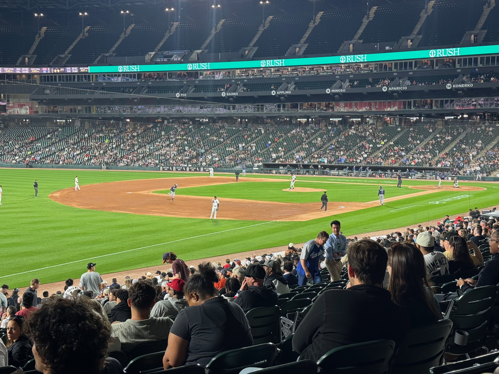

My Blog
My Blog
The Kana theme does not change how you write Markdown, but it does add a few helpful extras. Here are the ones I use most.
Syntax highlighting with a filename
Add a file attribute to a fenced code block and the theme will label it:
main.go
package main
import "fmt"
func main() {
fmt.Println("Hello from a Hugo code block")
}The highlighting uses the Gruvbox palette.
Collapsible code blocks
Long snippets can be folded away with details=true:
Details
hugo new content posts/2026/my-new-post.md
hugo server --buildDrafts
hugo --minifyResponsive images
Images placed in assets/ can be inserted with the asset-image shortcode, which handles WebP
conversion and sizing for you:
{{< asset-image "images/dev-image-03.jpeg" "600" "400" "A caption" >}}That’s it
Everything else is standard Markdown. Headings, lists, links, blockquotes, tables — they all just work.